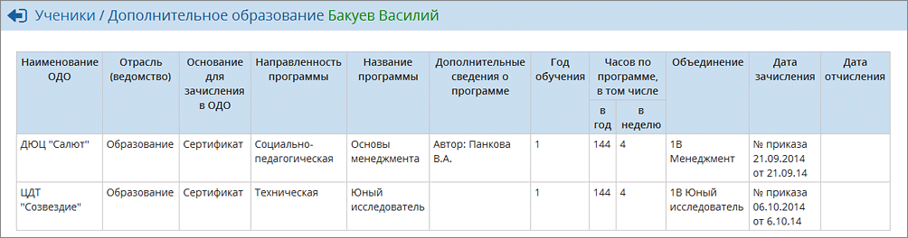

|
Дополнительное образование
|
| · | названия объединения (группы),
|
| · | информации о программе дополнительного образования (название, направленность и т.д.),
|
| · | даты зачисления в объединение (группу), а если в настоящий момент ученик выбыл из неё - то также и даты отчисления.
|
